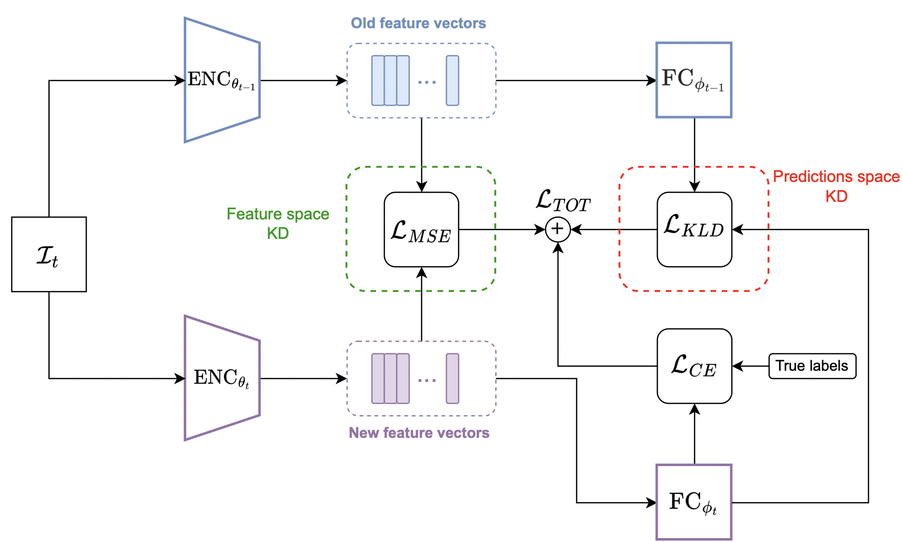

Umberto Cappellazzo
Umberto Cappellazzo
PhD student @ UniTn on CL for audio and speech
News Publications Education

Howdy! I’m Umberto Cappellazzo, a second-year PhD student at the University of Trento, Italy, advised by Daniele Falavigna and Alessio Brutti. I’m a member of the SpeechTek group at Fondazione Bruno Kessler (FBK), Trento. My research activity lies at the intersection of Continual Learning (CL) and speech-related tasks, such as Spoken Language Understanding (SLU) and Automatic Speech Recognition (ASR). Currently, I’m focusing on how to mitigate catastrophic forgetting (the tendency of deep NNs to fit the current data distribution to the detriment of the previous acquired knowledge) for seq2seq enc-dec joint SLU/ASR models, as well as studying how forgetting impacts on multi-modal scenarios (e.g., audio-text and audio-vision).


News
- 20/05/2023. Both my papers have been accepted at INTERSPEECH 2023! 🚀🚀 See you in Dublin! 🍀
1) “An Investigation of the Combination of Rehearsal and Knowledge Distillation in Continual Learning For Spoken Language Understanding”.
2) “Sequence-Level Knowledge Distillation for Class-Incremental End-to-End Spoken Language Understanding”.
- 23/05/2023. Super happy to share that I will join JSALT 2023 in Le Mans, France this summer! I will be part of the “Finite state methods with modern neural Architectures for speech applications and beyond “ group. I will be working with people from Google and rev.com, among others.
Publications

An Investigation of the Combination of Rehearsal and Knowledge Distillation in Continual Learning for Spoken Language Understanding
Umberto Cappellazzo, Daniele Falavigna, Alessio Brutti
INTERSPEECH 2023
Paper Code

Sequence-Level Knowledge Distillation for Class-Incremental End-to-End Spoken Language Understanding
Umberto Cappellazzo, Muqiao Yang, Daniele Falavigna, Alessio Brutti
INTERSPEECH 2023
Paper Code
Education
-
 PhD in Information Engineering and Computer Science
PhD in Information Engineering and Computer Science
University of Trento, Trento, Italy
Nov 2021-Present
Title: Continual Learning for audio and speech processing
Supervisors: Daniele Falavigna, Alessio Brutti
-
 M.S. in Telecommunication Engineering
M.S. in Telecommunication Engineering
University of Padova, Padova, Italy
2016-2019
Thesis title: A Deep Learning-Based ECG Delineator: Evaluation and Comparison on Standard Databases
Supervisors: Michele Rossi, Matteo Gadaleta
-
B.S. in Information Engineering
University of Padova, Padova, Italy
2013-2016
Feel free to reach out to me if you have any questions upon my research activity. Plus, I’m always apt to new collaborations! Please contact me at umbertocappellazzo [at] gmail.com.
Welcome to Jekyll!
Posted on May 30, 2023
You’ll find this post in your _posts directory. Go ahead and edit it and re-build the site to see your changes. You can rebuild the site in many different ways, but the most common way is to run jekyll serve, which launches a web server and auto-regenerates your site when...
[Read More]